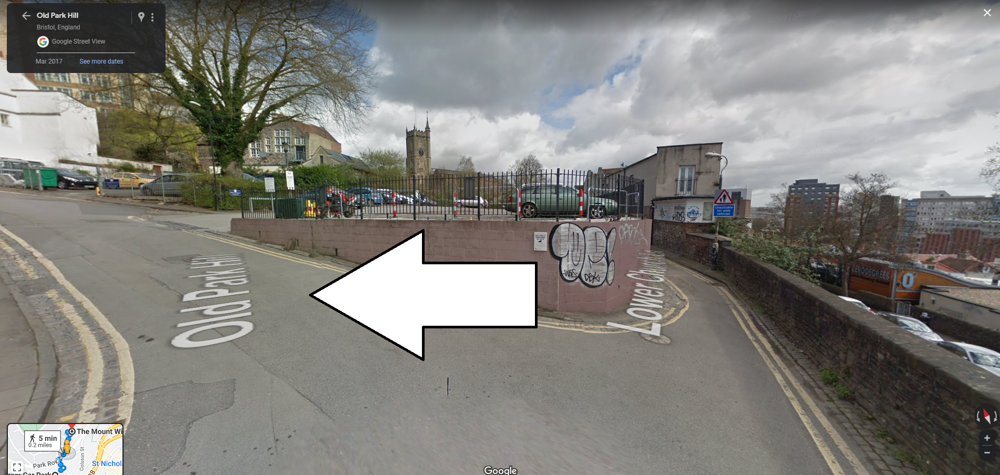

The wedding will be at:
There is step-free access from Trenchard Street to the Church:
The step-free acccess route from Trenchard Street Car park to the Mount Without.
Go up the hill:
Veer left:
Take the footpath that runs along the car park towards the church steeple you shjould be able to see, that's the spot!: